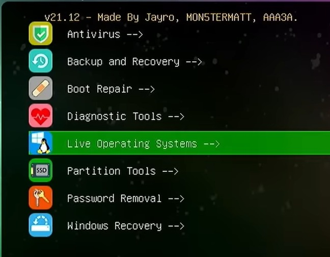
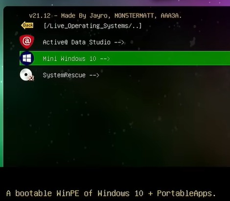
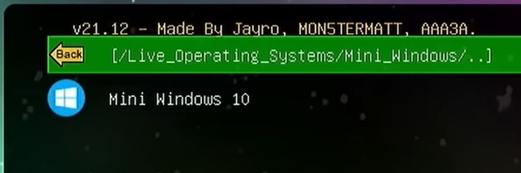
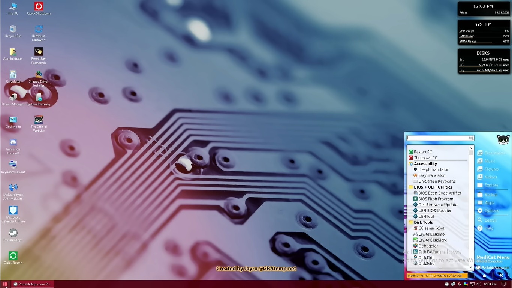
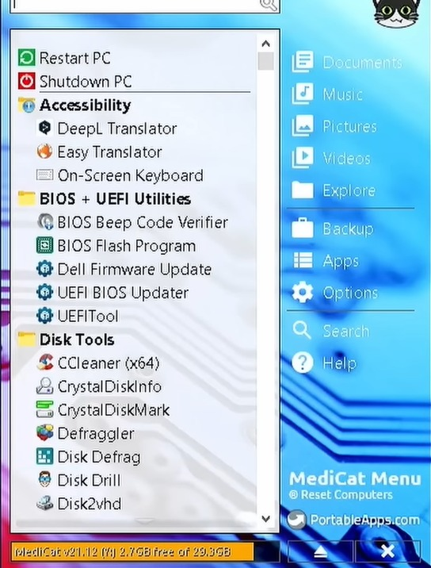

Definición
Medicat USB es un kit multiarranque que reúne sistemas operativos en vivo (Windows PE, Linux) y decenas de utilidades técnicas listas para usar sin instalar nada en el equipo.
Una guía técnica completa sobre Medicat USB y la herramienta Bios Beep Code Verifier para detectar e interpretar errores de hardware mediante los pitidos de la BIOS.
Una colección portátil de herramientas de diagnóstico, recuperación y mantenimiento de PC, todo arrancable desde una sola memoria USB.
Medicat USB es un kit multiarranque que reúne sistemas operativos en vivo (Windows PE, Linux) y decenas de utilidades técnicas listas para usar sin instalar nada en el equipo.
Permite reparar Windows, recuperar archivos perdidos, escanear malware, diagnosticar hardware, clonar discos y resetear contraseñas, todo desde un USB booteable.
Para técnicos informáticos es una navaja suiza: una sola herramienta para enfrentar fallas que normalmente requerirían instalar múltiples programas.
El usuario "Jayro" publica las primeras versiones de Medicat USB como alternativa libre a Hiren's BootCD, que había dejado de actualizarse.
Se incorpora un entorno Windows PE moderno, ampliando la compatibilidad con hardware y software actual.
Reorganización completa del menú Ventoy y mejor soporte UEFI / Secure Boot.
Es uno de los USB de rescate más populares, mantenido y actualizado por la comunidad.
| Herramienta | Estado | Tamaño aprox. | Soporte UEFI | WinPE incluido |
|---|---|---|---|---|
| Medicat USB | Activa | ~22 GB | Sí | Sí |
| Hiren's BootCD PE | Activa | ~1.2 GB | Sí | Sí |
| Ultimate Boot CD | Limitada | ~750 MB | Parcial | No |
| SARDU MultiBoot | Activa | Variable | Sí | Opcional |
Bios Beep Code Verifier, es una utilidad incluida en MediCat USB. Esta utilidad se usa para detectar fallas en una PC usando los pitidos que hace la BIOS al encender el equipo. tiene una lista de códigos de sonidos de distintas BIOS, como AMI, Phoenix e IBM. Además, puede producir esos sonidos con los que iguala con los que hace la PC Su función ayuda a localizar fallas de hardware. Según la cantidad y el tipo de pitidos, y asi sabes si el problema está en la placa de video, el procesador, la BIOS o la placa madre. ejemplo: si una pc hace muchos pitidos al encender, el técnico puede usar la bios beep code y asi saber si ese sonido es igual con algún código que tiene la bios beep code y saber que componente esta fallando
Es un programa que cataloga los beep codes de los principales fabricantes de BIOS (AMI, Award, Phoenix, IBM) y los reproduce para que el técnico los compare con lo que escucha al encender el equipo.
Identificar rápidamente fallas en RAM, tarjeta gráfica, procesador, BIOS o placa madre, según el patrón de pitidos emitido durante el POST.
Ahorra tiempo de diagnóstico: en lugar de desmontar componentes, el técnico interpreta el sonido y va directo al problema.
| BIOS | Patrón | Significado probable |
|---|---|---|
| AMI | 1 corto | Error de refresco de la memoria RAM |
| AMI | 2 cortos | Error de paridad en la memoria RAM base |
| AMI | 3 cortos | Error en los primeros 64 KB de RAM |
| AMI | 4 cortos | Error en el temporizador del sistema (System Timer) |
| AMI | 5 cortos | Error del procesador (CPU) |
| AMI | 6 cortos | Error del controlador del teclado (Gate A20) |
| AMI | 7 cortos | Error de excepción de modo virtual |
| AMI | 8 cortos | Error de lectura/escritura en la memoria de video |
| AMI | 9 cortos | Error de suma de comprobación (Checksum) de la ROM BIOS |
| AMI | 10 cortos | Error en el registro de apagado CMOS |
| AMI | 11 cortos | Error en la memoria caché |
| AMI | 1 largo + 3 cortos | Fallo en la prueba de memoria RAM |
| AMI | 1 largo + 8 cortos | Fallo en la prueba de pantalla o tarjeta de video |
| Award | 1 corto | Arranque normal del sistema |
| Award | 2 cortos | Error en la configuración de CMOS |
| Award | 1 largo + 1 corto | Error en la memoria RAM o placa base |
| Award | 1 largo + 2 cortos | Problema de tarjeta gráfica o monitor |
| Award | 1 largo + 3 cortos | Error de teclado o controlador de teclado |
| Award | 1 largo + 9 cortos | Error en la ROM de la BIOS |
| Award | Largos continuos | Error en la memoria RAM (mal insertada o dañada) |
| Award | Cortos continuos | Problema de fuente de alimentación o sobrecalentamiento |
| IBM | Ningún pitido | Sin corriente, cortocircuito o fuente dañada |
| IBM | 1 corto | Arranque normal (POST exitoso) |
| IBM | 2 cortos | Error en el POST (código en pantalla) |
| IBM | 1 pitido continuo | Fuente de alimentación defectuosa o teclado atascado |
| IBM | Cortos repetitivos | Fallo en la fuente de alimentación o placa base |
| IBM | 1 largo + 1 corto | Error general en la placa base |
| IBM | 1 largo + 2 cortos | Error en el adaptador de video (Monocromo/CGA) |
| IBM | 1 largo + 3 cortos | Error en el adaptador de video (EGA) |
| IBM | 3 largos | Error en la tarjeta del teclado |
| Phoenix | 1-1-3 | Error de lectura/escritura en CMOS |
| Phoenix | 1-1-4 | Fallo de suma de comprobación (Checksum) del BIOS / ROM |
| Phoenix | 1-2-1 | Error en el temporizador de intervalo programable |
| Phoenix | 1-2-2 | Fallo en la inicialización del controlador DMA |
| Phoenix | 1-3-1 | Error de verificación del refresco de RAM |
| Phoenix | 1-3-3 | Fallo en los primeros 64 KB de memoria RAM |
| Phoenix | 3-1-1 | Fallo en el registro DMA esclavo |
| Phoenix | 3-1-2 | Fallo en el registro DMA maestro |
| Phoenix | 3-2-4 | Fallo en el controlador del teclado |
| Phoenix | 3-3-4 | Fallo en la inicialización de la tarjeta de video |
| Phoenix | 4-2-1 | Fallo en el temporizador del reloj del sistema (RTC) |
| Phoenix | 4-2-3 | Fallo en el controlador del teclado (Gate A20) |
Sigue estas 5 capturas para acceder y usar Bios Beep Code Verifier desde el menú de Medicat.

Inserta el USB de Medicat, reinicia la PC y selecciona el dispositivo en el menú de arranque (F12 / F8 / Esc según fabricante). Aparece el menú principal de Ventoy.

Desde el menú de Medicat selecciona Mini Windows 10. Espera a que cargue el escritorio en vivo, sin tocar el sistema instalado.

En el escritorio busca el acceso Tools o Mini Windows Tools. Allí están organizadas todas las utilidades por categoría: hardware, red, seguridad, etc.

Entra a la categoría Hardware o BIOS y haz clic en Bios Beep Code Verifier. La herramienta se abre como una aplicación portable, sin instalación.

Selecciona el fabricante de la BIOS (AMI / Award / Phoenix). Reproduce los patrones, compáralos con lo que escuchaste al encender el equipo y lee el diagnóstico mostrado en pantalla.
Verifica que el speaker interno (buzzer) esté conectado a la placa madre. Sin él, no escucharás los códigos. Algunos equipos modernos lo omiten y usan LEDs de diagnóstico.
El mismo patrón de pitidos significa cosas distintas según AMI, Award o Phoenix. Revisa el modelo de la placa madre antes de interpretar.
Reasienta la RAM, limpia los contactos con un borrador y prueba un módulo a la vez. Muchos pitidos de "memoria" se resuelven así.
Algunas placas emiten pitidos continuos por sobrecalentamiento del CPU. Verifica el ventilador y la pasta térmica antes de cambiar componentes.
Bios Beep Code Verifier funciona también fuera de Medicat: es portable y puede copiarse a cualquier USB.
No manipules componentes con la fuente conectada. Desconecta y descarga la electricidad estática antes de tocar la placa.
Documenta cada diagnóstico (foto del equipo, modelo de BIOS, patrón escuchado). Te será útil para reparaciones futuras.
Procedimientos, errores comunes y herramientas que todo técnico debería dominar para diagnosticar y reparar PCs eficientemente.
La pila CR2032 está agotada. La BIOS pierde su configuración al apagar. Solución: reemplazar la pila.
La BIOS no encuentra un dispositivo arrancable. Solución: revisar orden de arranque, cables SATA o estado del disco.
Módulo de RAM defectuoso o mal asentado. Solución: probar con MemTest86 (incluido en Medicat).
La tarjeta gráfica no responde. Solución: reasentar GPU, probar otro slot PCIe o usar gráficos integrados.
| Herramienta | Uso | Categoría |
|---|---|---|
| MemTest86 | Probar memoria RAM | Hardware |
| CrystalDiskInfo | Estado SMART de discos | Almacenamiento |
| HWiNFO | Información detallada del sistema | Diagnóstico |
| Bios Beep Code Verifier | Interpretar pitidos POST | BIOS |
| CloneZilla | Clonado y respaldo de discos | Recuperación |
| Malwarebytes | Eliminación de malware | Seguridad |